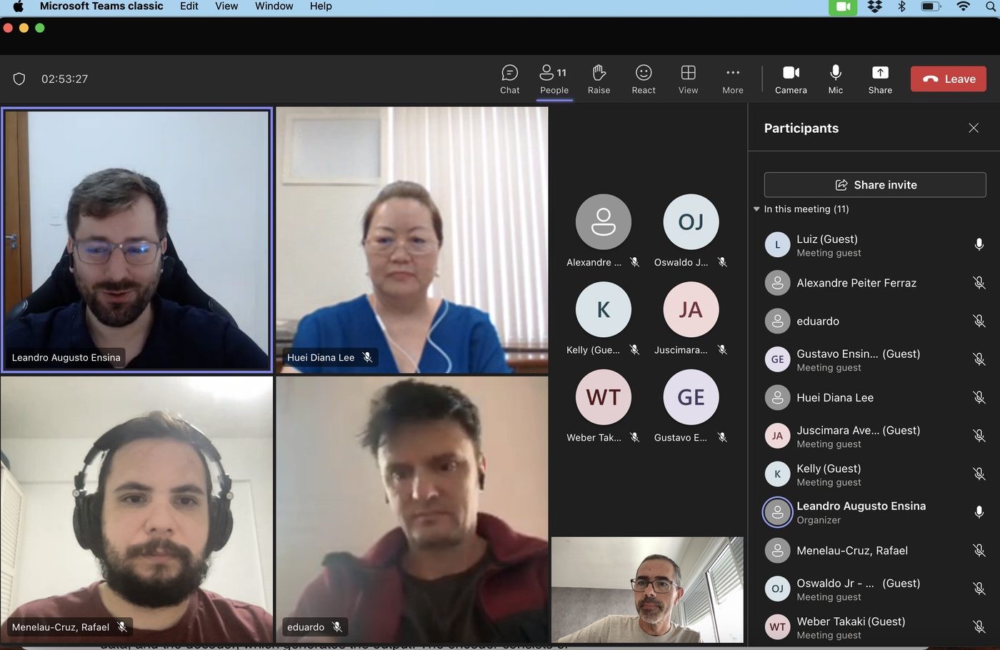

Dr. Leandro
Thesis defense: Leandro Augusto Ensina
On February 19th, Leandro Ensina’s doctoral defense took place. Leandro developed his doctoral thesis within the context of an R&D project financed by COPEL. The research focused on the use of dynamic regressor selection for fault localization in transmission lines. The examining committee consisted of professors Rafael Menelau Cruz from ETS/Canada, Huei Lee from Unioeste/PR, and Eduardo Almeida from DINF/UFPR. The most recent publication can be found here.

Considering that each member of the examining committee was located in a different part of the planet, the committee was conducted remotely.